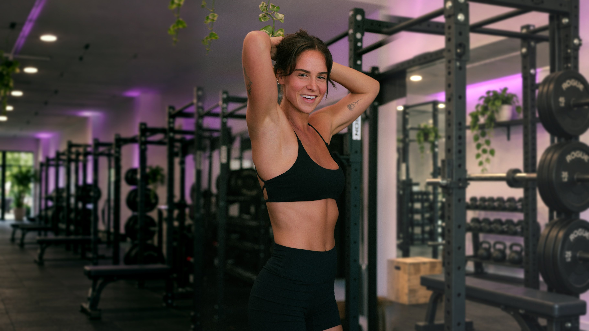

Maya Granat · ליווי תזונה ואימונים אונליין
גוף חזק וחטוב
שעובד בשבילך.
תזונה ואימונים שמותאמים אלייך ולחיים שלך, עם הרגלים ותוצאות שיישארו איתך הרבה אחרי שהתהליך ייגמר.
0% קיצוניות, 100% אהבה עצמית.
אם הגעת עד לכאן,
כנראה שאת מוכנה
לעשות שינוי אמיתי.
אולי את מתאמנת, אוכלת בריא ומרגישה שאת עושה הכול נכון, אבל עדיין לא רואה את התוצאות שאת רוצה. נמאס לך להתחיל כל פעם מחדש ולהרגיש שאת צריכה לבחור בין הגוף שאת רוצה לבין החיים שאת אוהבת.
אני כאן כדי להראות לך שאפשר גם אחרת.
לבנות גוף חזק וחטוב שעובד בשבילך, עם תזונה ואימונים שמותאמים אלייך, לשגרה שלך ולמטרות שלך. בלי לוותר על הדברים שאת אוהבת.
המטרה היא לא רק לשנות את הגוף שלך, אלא לבנות הרגלים, ביטחון ודרך חיים שיישארו איתך גם הרבה אחרי שהתהליך יסתיים.
אימונים
תוכנית אימוני כוח מותאמת אישית, עם דגש על טכניקה נכונה והתקדמות הדרגתית לבניית גוף חזק וחטוב.
תזונה
תפריט אישי וגמיש שמותאם למטרות, להעדפות ולשגרה שלך. בלי איסורים ובלי לוותר על האוכל שאת אוהבת.
מיינדסט
לבנות הרגלים שמחזיקים לאורך זמן, לשנות את הגישה לתהליך וללמוד להתמיד גם כשהחיים לא מושלמים.
הן כבר עשו את השינוי.
עכשיו תורך.


אז איך מתחילים?
- 1
ממלאת שאלון אישי
כדי שאכיר אותך באמת! את השגרה שלך, ההרגלים, ההעדפות והמטרות שלך, עד לפרטים הכי קטנים. איך את שותה את הקפה שלך, על מה את לא מוכנה לוותר ומה חשוב לך לשלב בתפריט.
- 2
מורידה את האפליקציה
מעלה את המשקל, ההיקפים ותמונות ההתחלה שלך. כל אלה יעזרו לי להכיר את נקודת הפתיחה שלך ולבנות לך תפריט ותוכנית אימונים שמותאמים בדיוק אלייך ולמטרות שלך.
- 3
תוך 5 ימי עסקים, התפריט ותוכנית האימונים אצלך!
אבנה לך תפריט ותוכנית אימונים בהתאמה אישית, לפי המטרות, ההעדפות ושגרת החיים שלך. הכול יחכה לך באפליקציה, מסודר ונגיש בכל רגע.
בנוסף, יחכו לך מדריכי הכנה לתהליך: מבוא לתפריט, מבוא לתוכנית האימונים ומבוא לתוכנית הליווי, כדי שתוכלי להכיר את התוכנית שלך ולהבין איך הכול עובד.
- 4
שיחת פתיחה ויוצאות לדרך!
נעבור יחד על התוכנית שלך, נסביר איך הכול עובד, נענה על השאלות שלך ונוודא שאת יוצאת לדרך עם ביטחון ועם כל מה שאת צריכה כדי להתחיל.
- 5
ליווי אישי לאורך כל הדרך
מכאן אני והצוות איתך! עם מעקב שוטף, מענה לשאלות, בדיקת ההתקדמות שלך, שיחות אישיות והתאמות לתזונה ולאימונים לאורך הדרך.
איך נראה הליווי?
את לא מקבלת רק תפריט ותוכנית אימונים.
את מקבלת מעטפת שלמה עם ליווי אישי, מעקב, תמיכה והתאמות לאורך כל הדרך.
ליווי אישי וצמוד מדי יום
אני וצוות היועצות כאן בשבילך לכל שאלה, התייעצות או קושי שעולה בדרך. גם כשהמוטיבציה יורדת או הדברים לא הולכים כמתוכנן, יש לך למי לפנות! עם זמינות גבוהה ומענה מהיר לאורך שעות הפעילות, ולא רק כשאת פונה אלינו! אנחנו גם יוזמות קשר, מתעניינות, בודקות איך את מרגישה ואיך את מתקדמת, כדי לוודא שאת בדרך הנכונה ולא נשארת לבד בתהליך.
מעקב התקדמות שבועי
בכל יום חמישי מתקיימת שקילה, ואחת לשבועיים מעדכנים גם היקפים ותמונות התקדמות. כי המספר על המשקל לא תמיד מספר את כל הסיפור!
שיחת מעקב אישית בכל חודש
שיחה עם היועצת האישית שלך, שבה נעצור לבחון את ההתקדמות, נדבר על האתגרים ונדייק את הדרך להמשך.
התאמות לאורך הדרך
התוכנית שלך לא נשארת קבועה! אני מבצעת התאמות בתזונה ובאימונים בהתאם להתקדמות שלך, למטרות שלך ולשינויים בשגרה.
הכנה מראש לכל אירוע
מסעדה, חופשה או אירוע? לא צריך לשבור את הראש לבד! נתכנן יחד איך לשלב את הדברים שאת אוהבת בלי רגשות אשם ובלי להרגיש שיצאת מהמסלול.
תמיכה מנטלית והרגלים לחיים
נעבוד גם על התמדה, ביטחון עצמי וגישה מאוזנת לאוכל ולאימונים. כי המטרה היא לא רק להגיע לתוצאות, אלא גם לבנות הרגלים שיעזרו לך לשמור עליהן הרבה אחרי שהתהליך יסתיים.
הכול במקום אחד,
באפליקציה אחת.
אפליקציית Maya Granat פותחה במיוחד עבור תהליך הליווי, כדי שכל מה שאת צריכה יהיה מסודר ונגיש במקום אחד. התפריט האישי שלך, תוכנית האימונים, יעדים יומיים, מעקב אחר משקל, היקפים, תמונות והתקדמות, הכול במקום אחד, פשוט ונוח לשימוש.

מסך הבית
כל מה שאת צריכה לדעת במקום אחד: היעדים היומיים שלך, מעקב אחר קלוריות, חלבון, פחמימות ושומנים, האימונים שלך, ההישגים השבועיים, צריכת המים והצעדים. הכול במבט אחד, פשוט, נוח ומסודר.

התפריט שלך
תפריט אישי וגמיש שמותאם בדיוק אלייך, עם מגוון אפשרויות והחלפות לכל ארוחה. לא מתחשק לך מה שבתפריט? תוכלי להחליף ארוחות ומאכלים בקלות, ואפילו להיעזר ב-AI כדי להתאים את הארוחה למה שבא לך לאכול. בלי תפריט נוקשה ובלי לוותר על מה שאת אוהבת.

האימונים שלך
תוכנית אימונים אישית עם סרטוני הדגמה לכל תרגיל, פירוט סטים, חזרות ומשקלים, טיימר מנוחה ותיעוד הביצועים שלך מהאימון הקודם. הכול כדי שתוכלי לעקוב אחרי ההתקדמות שלך, להשתפר מאימון לאימון ולהתחזק לאורך הדרך.

ההתקדמות שלך
כל ההתקדמות שלך במקום אחד! מעקב אחר משקל, היקפים, צעדים, מים ותמונות התקדמות, עם גרפים שמאפשרים לך לראות את השינוי לאורך זמן. ההתקדמות שלך היא הרבה מעבר למספר שעל המשקל.

מתכונים ומדריכים
מגוון מתכונים לחיטוב לארוחות בוקר, צהריים, ערב ונשנושים, לצד מדריכים שימושיים לחגים, רשימות קניות וטיפים להתנהלות במצבים מיוחדים.
אז רגע, הליווי שלי מתאים לך?
הליווי שלי מתאים לך אם...
- את מתאמנת, משתדלת לאכול נכון, אבל מרגישה שאת לא רואה את התוצאות שאת רוצה.
- את מוכנה להשקיע בעצמך, להתמיד ולהבין ששינוי אמיתי דורש זמן וסבלנות.
- את רוצה לבנות גוף חזק וחטוב, בלי לוותר על כל הדברים שאת אוהבת.
- את מחפשת ליווי אישי, הכוונה וכלים שיעזרו לך להגיע למטרה שלך ולא רק עוד תפריט.
- את מוכנה ללמוד, לצאת מאזור הנוחות ולעשות שינויים בהרגלים שלך כדי להגיע לתוצאות.
ולמי הליווי שלי פחות מתאים?
- אם את מחפשת פתרון קסם או תוצאות משמעותיות בלי להשקיע בתהליך.
- אם את מצפה שתפריט ותוכנית אימונים יעשו את העבודה בשבילך, בלי שתצטרכי ליישם אותם.
- אם את לא מוכנה לעשות שינויים בהרגלים שלך או להתגמש כשצריך.
- אם את מחפשת דיאטה קיצונית, איסורים נוקשים או דרך לרדת כמה שיותר מהר במשקל.
- אם את לא מוכנה להיות חלק פעיל מהתהליך, לשתף, להתייעץ ולעבוד יחד איתנו כדי להתקדם.
אני לא מצפה ממך להיות מושלמת.
אני כן מצפה ממך להיות מחויבת לעצמך ולמטרה שלך.
שאלות נפוצות
צריך מנוי לחדר כושר?
תוכנית האימונים נבנית בהתאם למטרות שלך ולמקום שבו את מעדיפה להתאמן: בחדר כושר, בבית או בסטודיו.
יחד עם זאת, אני כן ממליצה על חדר כושר כשיש אפשרות, בעיקר בזכות מגוון הציוד והיכולת להתקדם בצורה יעילה יותר בבניית מסת שריר.
אם את מעדיפה להתאמן בבית, נתאים את התוכנית לציוד שיש לך. ואם את מתאמנת בסטודיו, נבחן יחד איך אפשר לשלב את האימונים בתהליך ולבצע התאמות בהתאם למטרות שלך.
המטרה היא שתתאמני בצורה אפקטיבית, אבל גם בדרך שמתאימה לשגרה שלך ושתוכלי להתמיד בה לאורך זמן.
אני מתחילה מאפס. זה מתאים לי?
ברור! את ממש לא צריכה להגיע עם ניסיון קודם באימונים או ידע בתזונה.
התהליך מותאם אלייך ולנקודת הפתיחה שלך, גם אם מעולם לא התאמנת בחדר כושר או עקבת אחרי תפריט מסודר. אני אבנה לך תוכנית שמתאימה לרמה שלך, ויחד עם הצוות שלי נדאג שתקבלי את ההכוונה, הכלים והביטחון להתחיל נכון, ללמוד תוך כדי ולהתקדם בהדרגה.
ליווי אונליין באמת עובד?
חד משמעית! ולליווי אונליין יש אפילו לא מעט יתרונות.
קודם כול, את לא צריכה לבזבז זמן על נסיעות ופגישות מיותרות. את מתאמנת בזמן ובמקום שנוחים לך, וכל המעקב מתבצע בקלות דרך האפליקציה.
אבל היתרון הכי משמעותי בעיניי הוא הליווי השוטף והזמינות הגבוהה. במקום להיפגש פעם בשבוע ולחכות לפגישה הבאה, אנחנו בקשר לאורך השבוע, עם מענה מהיר לשאלות, התייעצויות וקשיים שעולים בדרך. אנחנו גם יוזמות קשר, בודקות איך את מתקדמת ודואגות שלא תישארי לבד בתהליך.
והתוכנית שלך? היא לא נשארת קבועה! אנחנו עוקבות אחרי ההתקדמות שלך ומבצעות שינויים והתאמות בתזונה ובאימונים תוך כדי תנועה, בכל פעם שיש צורך, בהתאם לתוצאות, למטרות ולשגרה שלך.
איך אדע שאני מבצעת את התרגילים נכון?
לכל תרגיל באפליקציה יש סרטון הדגמה והנחיות ביצוע מפורטות, כדי שתדעי בדיוק מה לעשות ואיך לבצע את התרגיל בצורה נכונה.
בנוסף, במיוחד בתחילת התהליך, חשוב לי שתצלמי את עצמך מבצעת את התרגילים ותעלי סרטוני טכניקה לאפליקציה. כך נוכל לבדוק את הביצוע שלך, לתת לך משוב ותיקונים במידת הצורך ולעזור לך להשתפר מאימון לאימון.
ואם משהו לא ברור או שאת לא בטוחה לגבי תרגיל מסוים, פשוט תשאלי! אנחנו זמינות עם מענה מהיר כדי שתוכלי להתאמן בביטחון ולהמשיך להתקדם.
אני אהיה רעבה?
המטרה היא ממש לא שתרגישי שאת צריכה לסבול כדי לראות תוצאות!
התפריט שלך נבנה בהתאם למטרות, להעדפות, לשגרה ולתחושות הרעב והשובע שלך, עם מגוון אפשרויות והחלפות לכל ארוחה.
חשוב לי שתיהני מהאוכל שלך, תרגישי מסופקת ותוכלי להתמיד בתהליך לאורך זמן.
ואם משהו לא עובד לך? אנחנו כאן כדי לדייק, לשנות ולהתאים את התפריט תוך כדי תנועה.
מה עם אירועים, מסעדות וחופשות?
ממשיכים לחיות וליהנות!
אני לא מאמינה שצריך לבחור בין הגוף שאת רוצה לבין החיים שאת אוהבת. מסעדות, אירועים, חופשות ובילויים הם חלק מהחיים, והמטרה היא ללמוד איך לשלב אותם בתהליך.
יחד עם זאת, חשוב לי להיות כנה איתך: כדי להגיע לתוצאות, לפעמים צריך גם לעשות בחירות, להתפשר ולוותר על דברים מסוימים. אבל זה לא אומר שצריך לוותר על כל מה שאת אוהבת!
בדיוק בשביל זה אנחנו כאן. נתכנן יחד מראש, נלמד איך להתנהל בסיטואציות שונות ונמצא את האיזון בין ההנאה שלך לבין המטרות שלך.
תוך כמה זמן אראה תוצאות?
את השינוי את יכולה להתחיל להרגיש עוד לפני שתראי אותו במראה.
כבר בשבועות הראשונים יכול להיות שתרגישי יותר אנרגטית, חזקה ובטוחה בעצמך, ותתחילי להרגיש שההרגלים החדשים הופכים לחלק מהשגרה שלך.
מבחינת השינוי הגופני, הקצב משתנה מאחת לאחת ותלוי בנקודת הפתיחה שלך, במטרות ובמידת ההתמדה בתהליך. יש מתאמנות שרואות שינויים כבר בשבועות הראשונים, ואצל אחרות זה לוקח קצת יותר זמן.
חשוב לזכור שהתקדמות לא נמדדת רק במספר שעל המשקל, אלא גם בהיקפים, בתמונות, בכוח באימונים ובהרגשה הכללית שלך.
ומה שהכי חשוב לי שתביני? תוצאות משמעותיות דורשות זמן, עקביות וסבלנות. אנחנו לא מחפשות פתרונות קסם, אלא שינוי הדרגתי שנוכל להתמיד בו ולשמור עליו לאורך זמן.
ומה קורה כשהתהליך נגמר?
המטרה שלי היא שבסוף התהליך כבר לא תצטרכי אותי!
חשוב לי שלא רק תגיעי למטרה שלך, אלא גם שתצאי מהליווי עם הידע, הכלים והביטחון להמשיך באופן עצמאי ולשמור על התוצאות שהשגת.
במהלך התהליך תלמדי להבין את הגוף שלך, להתנהל עם התזונה והאימונים ולשלב את כל אלה בשגרת החיים שלך, בלי להיות תלויה בתפריט או בליווי לנצח.
ואם תרגישי שאת עדיין צריכה הכוונה או שיש לך מטרות חדשות? תמיד תוכלי לבחור להמשיך איתנו לתקופת ליווי נוספת.
מבחינתי הצלחה אמיתית היא לא רק להגיע לתוצאות, אלא לדעת איך לשמור עליהן גם הרבה אחרי שהתהליך מסתיים.
מה עלות הליווי?
עלות הליווי משתנה בהתאם למסלול ולמשך התהליך המתאים לך. בשיחת הייעוץ הראשונית נכיר, נדבר על המטרות שלך, על נקודת הפתיחה שלך ועל מה שאת רוצה להשיג, ויחד נבחר את מסלול הליווי שהכי נכון עבורך.
תקבלי את כל הפרטים על המסלולים והמחירים, וכמובן שתוכלי לשאול כל שאלה ולקבל את כל המידע שאת צריכה.
אני רוצה! איך מתחילים?
קודם כול, תתכונני לקשר לטווח ארוך, כי אנחנו הולכות לעבור דרך ביחד!
כל מה שאת צריכה לעשות הוא להשאיר את הפרטים שלך בטופס כאן למטה, והצוות שלי יחזור אלייך לשיחת ייעוץ ראשונית.
בשיחה נכיר, נבין מה המטרות שלך, נבחר יחד את המסלול שהכי מתאים לך ונעבור על כל הפרטים, כולל התשלום.
ומשם? יוצאות לדרך! תקבלי את כל ההנחיות להמשך, ונתחיל לבנות את התהליך שלך, צעד אחר צעד.
הצעד הראשון
מתחיל כאן.
השאירי פרטים ונחזור אלייך לשיחת ייעוץ, או שלחי הודעה ישירות בוואטסאפ.
שלחי הודעה בוואטסאפ